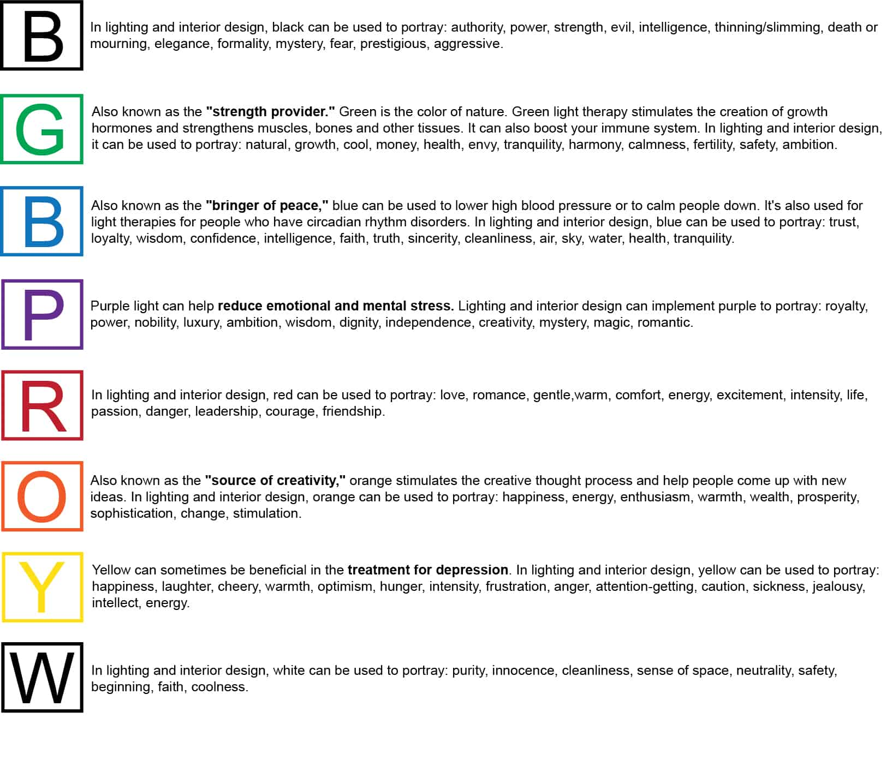

About
Light

The Psychological Impact of Light and Color:
Light creates more than just visual effects (image, shape, intensity, perception, contrast, etc.); it also has biological and psychological effects that can impact the health and wellbeing of humans.
When light biologically impacts us, it can improve or disrupt our sleep, cognition and overall wellbeing. It can improve mood and stabilize our circadian rhythms, helping us get a better and deeper nights sleep. Psychologically, light can decrease depression scores and even increase cognitive performance such as reaction time and activation.
Brightness, Saturation and Hue
These are the three main qualities of light in relation to color. Brightness is the amount of light given off by a light source, usually expressed in lumens or lux. Some studies have shown that brighter light can intensify emotions, while low light doesn’t remove emotions, but keeps them steady. This can lead to people having the ability to make more rational decisions in low light and find it easier to agree with others in negotiation.
Saturation is the intensity of a color. More saturated hues can have amplifying effects on emotions, while muted colors can dampen emotions. In art, saturation is defined on a scale from pure color (100% [fully saturated]) to grey (0%). In lighting, a similar scale can apply.
Hue is defined as a color or shade. It’s been proven (through various studies) that natural light can make you happier, but colors created by artificial light can also evoke different emotions and have other effects on the body.
Negative Effects of Light:
Artificial light is composed of visible light as well as some ultraviolet (UV) and infrared (IR) radiations, the emission levels of some lights could harm ones eyes and disrupt the human body clock and the hormonal system, therefore causing health problems.
The ultraviolet and the blue components of light have the greatest potential to cause harm, exposure to artificial bright light during the nighttime suppresses our melatonin secretion, which will affect our ability to fall asleep and also increases alertness. Our sleep cycle is crucial for human health because our bodies follow it for other biological functions such as cell regulation and hormone production, when artificial light disruptes the circadian cycle, severe health issues could happen, and we would be more prone to cardiovascular disease, depression, insomnia, and many other sleep disorder.
Not only humans are suffering from negative aspects of artificial light, our environmental health is also suffering from light pollution. Artificial light also causes harm to animals as it disturbes their instinctive cycle. Artificial light also causes confusion for proper plant growth, distraction for migrating birds, disturbance for amphibian reproduction and even difficulties for astronomers.
Designed by Karin Song.
Email (at) songy703@newschool.edu